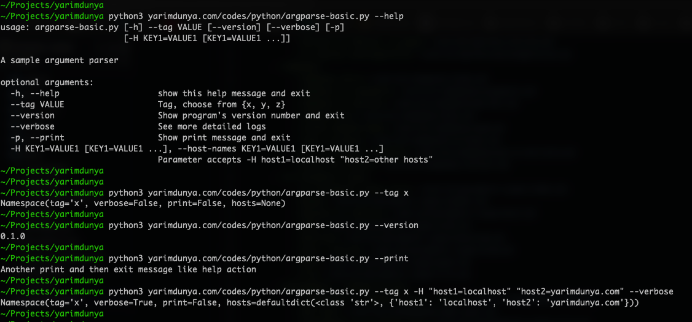
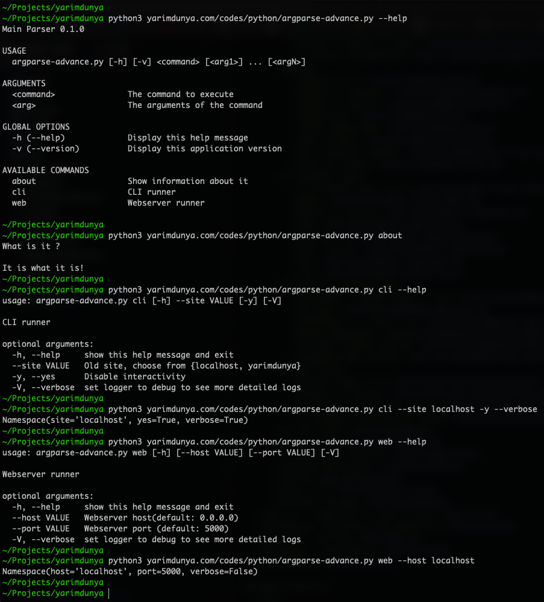

ArgumentParser¤
Basic argparse¤
from argparse import Action
from argparse import ArgumentError
from argparse import ArgumentParser as BaseArgumentParser
from argparse import HelpFormatter as BaseHelpFormatter
from collections import defaultdict
__version__ = "0.1.0"
class PrintAction(Action):
def __call__(self, parser, namespace, values, option_string=None):
parser.exit(message="Another print and then exit message like help action\n")
class ParseKVAction(Action):
def __call__(self, parser, namespace, values, option_string=None):
setattr(namespace, self.dest, defaultdict(str))
for each in values:
try:
key, value = each.split("=")
getattr(namespace, self.dest)[key] = value
except ValueError as ex:
message = "\nTraceback: {}".format(ex)
message += "\nError on '{}' || It should be 'key=value'".format(each)
raise ArgumentError(self, str(message))
class HelpFormatter(BaseHelpFormatter):
def __init__(self, prog):
super(HelpFormatter, self).__init__(prog=prog, max_help_position=32, width=100)
class ArgumentParser(BaseArgumentParser):
def __init__(self):
super(ArgumentParser, self).__init__(
description="A sample argument parser",
formatter_class=HelpFormatter,
)
sites = map(str, ["x", "y", "z"])
self.add_argument(
"--tag",
type=str,
help="Tag, choose from {%(choices)s}",
choices=sites,
metavar="VALUE",
required=True,
)
self.add_argument(
"--version",
action="version",
help="Show program's version number and exit",
version=__version__,
)
self.add_argument(
"--verbose",
help="See more detailed logs",
action="store_true",
default=False,
)
self.add_argument(
"-p",
"--print",
action=PrintAction,
nargs=0,
help="Show print message and exit",
default=False,
)
self.add_argument(
"-H",
"--host-names",
dest="hosts",
nargs='+',
action=ParseKVAction,
help='Parameter accepts -H host1=localhost "host2=other hosts"',
metavar="KEY1=VALUE1",
)
args = ArgumentParser().parse_args()
print(args)
Usage¤

Advanced argparse¤
from __future__ import print_function
import argparse
import sys
import textwrap
import warnings
from argparse import HelpFormatter as BaseHelpFormatter
__version__ = "0.1.0"
warnings.filterwarnings("ignore")
class AboutParser(argparse.ArgumentParser):
title = "about"
description = "Show information about it"
def handle(self, arguments):
usage = textwrap.dedent(
"""\
What is it ?
It is what it is!
"""
)
sys.stdout.write(usage)
class WebParser(argparse.ArgumentParser):
title = "web"
description = "Webserver runner"
def __init__(self, **kwargs):
super().__init__(**kwargs)
self.add_argument(
"--host",
type=str,
help="Webserver host(default: %(default)s)",
metavar="VALUE",
default="0.0.0.0"
)
self.add_argument(
"--port",
help="Webserver port (default: %(default)s)",
type=int,
default=5000,
metavar="VALUE",
)
def handle(self, arguments):
print(arguments)
class CLIParser(argparse.ArgumentParser):
title = "cli"
description = "CLI runner"
def __init__(self, **kwargs):
# lazy import
super().__init__(**kwargs)
self.add_argument(
"--site",
type=str,
help="Old site, choose from {%(choices)s}",
choices=["localhost", "yarimdunya"],
metavar="VALUE",
required=True,
)
self.add_argument(
"-y",
"--yes",
dest="yes",
help="Disable interactivity",
action="store_true",
default=False,
)
def handle(self, arguments):
print(arguments)
class HelpFormatter(BaseHelpFormatter):
def __init__(self, prog):
super().__init__(prog=prog, max_help_position=32, width=100)
class MainParser(argparse.ArgumentParser):
def __init__(self, commands: list):
super().__init__()
self.available_commands = commands
self.add_argument(
"command",
choices=self._get_available_commands(),
help="subcommands"
)
self.add_argument(
"-v",
"--version",
action="version",
help="show program's version number and exit",
version=__version__,
)
def _get_available_commands(self):
return {cmd.title for cmd in self.available_commands}
def parse_args(self, *_):
args = super().parse_args(sys.argv[1:2])
self.parse(args.command)
return args
def parse(self, cmd):
for each in self.available_commands:
if each.title == cmd:
parser_class = each
break
else:
raise ValueError("No such commands: {}".format(cmd))
parser = parser_class(
prog="{} {}".format(self.prog, cmd),
description=parser_class.description,
formatter_class=HelpFormatter,
)
self._register_global_arguments(parser)
arguments = parser.parse_args(sys.argv[2:])
parser.handle(arguments)
@staticmethod
def _register_global_arguments(parser):
parser.add_argument(
"-V",
"--verbose",
dest="verbose",
help="set logger to debug to see more detailed logs",
action="store_true",
default=False,
)
def format_usage(self):
return self.format_help()
def format_help(self):
commands = ""
for each in self.available_commands:
commands += " {}{}\n".format(each.title.ljust(24), each.description)
help_msg = textwrap.dedent(
"""\
Main Parser {version}
USAGE
{prog} [-h] [-v] <command> [<arg1>] ... [<argN>]
ARGUMENTS
<command> The command to execute
<arg> The arguments of the command
GLOBAL OPTIONS
-h (--help) Display this help message
-v (--version) Display this application version
AVAILABLE COMMANDS
{commands}
"""
).format(
version=__version__,
prog=self.prog,
commands=commands,
)
return help_msg
def main():
commands = [
AboutParser,
CLIParser,
WebParser
]
parser = MainParser(commands=commands)
parser.parse_args()
if __name__ == '__main__':
main()
Usage¤
